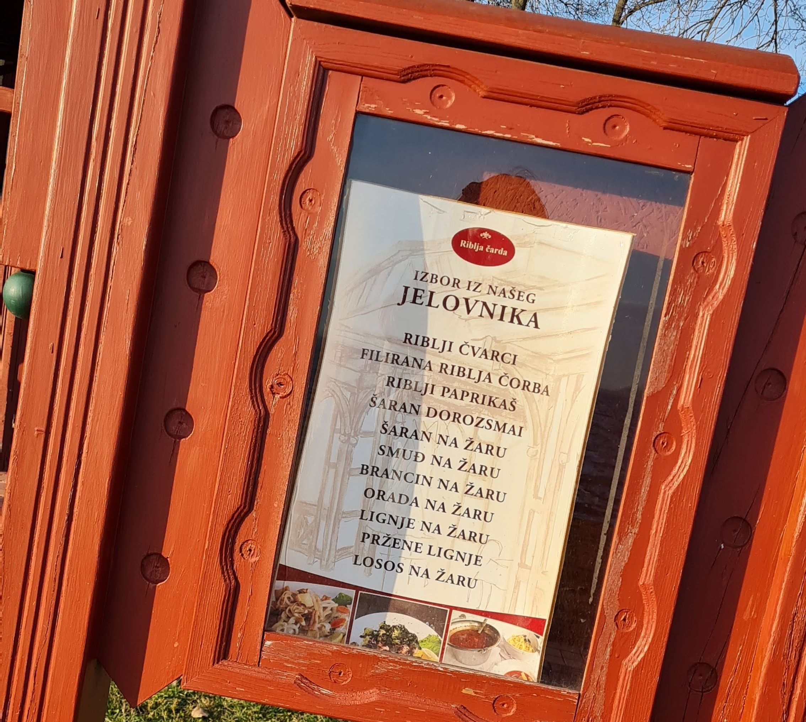

Riblja čarda
|
Riblja čarda, sagrađena osamdesetih godina 19. veka, je specijalizovani riblji restoran poznat po filiranoj ribljoj čorbi i ribljim čvarcima.
Specijaliteti kuće:
Radno vreme: Ponedeljak - Nedelja 10 - 22h Posetite njihovu stranicu za više informacija: elittepalic.rs/restoran-riblja-carda |
|
|  |  |
 |